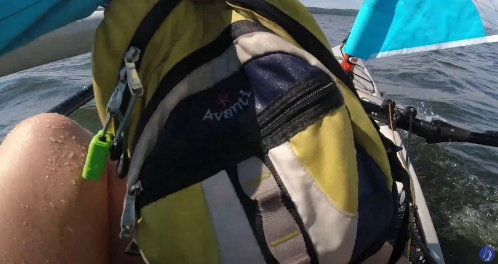

First Sail on Our Hobie Mirage Tandem Island

Our first time on the water together was awesome and fun! Sailing is new to me, but not Billy. He grew up sailing in Destin, Florida and was a lifeguard on the Gulf of Mexico for much of his high school years. In North Carolina, I grew up with a lake literally in my back yard.
Growing up, I swam and fished every day; at the same time elsewhere, Billy sailed and rescued people. I dodged the poisonous water moccasin snakes and snapping turtles; and Billy dodged the sharks and barracuda.
I think it’s pretty cool that we both found each other from so far away, and that we both share a love for adventure on the water. We hope you will hang out a while and return often as we journey ahead together.
 ▶ Watch on YouTube
▶ Watch on YouTubeFirst Sail on Our Hobie Mirage Tandem Island
Watch the video or continue to read. Feel free to view both and enjoy!
Billy’s boats through the years: Hobie 16, Hobie 21, Inter 20 Sounds pretty cool, huh?
Boats I had: small red and white rowboat and a free canoe; which had a huge dent on the bottom with a hole that I kept having to replace the duct tape on.
Alright so... couple of things...

Waterproof bag is a must.
Our maiden voyage was a little rough… like wave, wave, wave. It slowed us down and caused us to lose a lot of wind speed. If we had tramps on each side, I could get on a side and possibly weigh it down to give us even more stability and speed. It was a lot of fun even though I got just absolutely soaked, well, everything got soaked. I didn’t expect everything to get THAT wet. I also became cold. Very cold. We’ve been doing a lot of research and found a few waterproof bags we want to try.
Now researching wetsuits, dry suits, and any warm suits..... more to come! By the way, did I mention the cold?